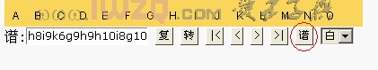

五子妙手V2012Beta版本发布
#1 五子妙手V2012Beta版本发布作者：小丸.net 发表时间：2012-5-11 9:43:50
************************************************************************
软件名称：五子妙手 互动棋谱管理软件
软件版本：五子妙手V2012 Beta
软件作者：康岩[小丸.net]
软件类型：免费软件(永久免费)
************************************************************************
软件简介：五子妙手是五子棋爱好者不可少的研习打谱软件，他强大的研谱、棋谱管理功能可以为您在学习五子棋时起来事半功倍的作用。
开发历史：
五子妙手V2012 Beta
1.修正RENA棋谱显示打谱数字时显示颜色的错误
2.更新棋手等级分 截止到2012年1月
3.修正自定义文字显示位置
4.注册IWZQ协议，点击爱五子棋链接，可以直接打开五子妙手软件进行打谱
看以上棋谱，可以看到图片：

点击谱字，即可以直接打开打谱软件进行打谱。
5.增加了数百张棋谱
v2011正式版
1.完善了印刷棋谱的导出功能，减少做成WORD时的工作量
2.纳入了国际标准SGF格式棋谱的读写
3.对棋手数据进行了重新整理，重新修正了等级分为中国棋院等级分
4.增加了三手胜、天狗道场、ENJOY等试题
V2010 sp1
1.完善升级功能
2.增加了一个HTML生成器，可以把爱五子棋文档直接生成HTML粘贴到WORD中。
3.增加交手记录查询，可以查询任意两个棋手的交手记录
4.增加了一些棋谱
5.修改了国内五子棋TYPE等级分的分制，并修正了一些棋手信息。
6.
V2010 正式版
备注：2010版采用了新版数据库，请在更新前导出您自己的棋谱。
1.去掉了皮肤功能,去掉了新闻中心功能，使系统运行更快
2.重新整所有棋谱(计 1397谱)
3.增加了棋手信息，包括所属地区，所属俱乐部，等级分，棋谱数，胜率等。
4.查询棋谱更方便(根据棋手查询<以棋手的名字,网名,QQ网名,IWZQ注册ID,常用绰号,常用封号以及以上各类信息的拼音查询>,根据棋谱同型查询)
5.修正了读取ORC棋谱没有和棋的BUG
6.新版的妙手软件更小，易于携带
7.2010版数据更新程序测试版发布
V2009 beta
1.重新整理了所有的棋谱
2.增加了新闻中心，能够让您快速的浏览与五子棋有关的新闻
3.重写了所有的帮助文档
4.修改版本显示方式
5.对界面与菜单作了一些调整
6.修正了修改棋盘路数时棋星位置显示错误的BUG
V3.5 正式版
1.修改了一些小BUG
2.新增自动播放功能.可以自动播放盘面上的棋谱
3.修改成了集成环境,增强棋谱的管理
V3.0 Beta III B0601 全团赛修改版
1.修正了软件在Vista下不能打开的BUG
2.增加13路，9路棋盘功能，兼容围棋打谱软件数据。
3.对打开SGF,ORC谱的功能增强,可以打开他们的详细信息并可以实时保存,并修改其中可能导致的系统死机的BUG
V3.0 Beta III
1.软件增加支持17*17路,19*19路棋盘
2.可以保存窗体的位置，大小，启动后自运设为上次运行的大小
3.在主界面上可以快捷打开棋谱
4.修改字体，让字体更好看
［此帖子已被 小丸.net 在 2012-5-11 9:44:59 编辑过］
［ 踵酃 于 2012-5-11 23:28:44 时花20金币送鲜花一朵］
#2 Re:五子妙手V2012Beta版本发布作者：小丸.net 发表时间：2012-5-11 9:55:43
PS:
1.由于需要修改注册表，可能会被360和QQ安全中心拦截，请在开软件时进行放行。
2.感谢艾显平、梅凡、候新元对软件提出宝贵意见和找出软件中隐藏的BUG.
#3 Re:五子妙手V2012Beta版本发布作者：孙弈淏 发表时间：2012-5-11 12:37:29
请教能不能一次性添加棋子。想把http://www2.compute.com.tw/~5871224/网上的坂田白先胜转成word文档！不会？#4 Re:五子妙手V2012Beta版本发布作者：小丸.net 发表时间：2012-5-11 12:52:42
这套题不用找了，爱五子棋就有。
猛击这里
#5 Re:五子妙手V2012Beta版本发布作者：孙弈淏 发表时间：2012-5-11 14:39:25
谢谢！！！！！！！！！！！！！#6 Re:五子妙手V2012Beta版本发布作者：杜科 发表时间：2012-7-13 11:43:18
连珠终结者是什么 啊？#7 Re:小丸.net【==五子妙手V2012Beta版本发布==】作者：蔡鸟 发表时间：2013-1-10 15:41:56
 这个软件超好用 先膜拜下~感谢下~
这个软件超好用 先膜拜下~感谢下~
但是在使用过程中发现了个小问题见下图：


#8 Re:五子妙手V2012Beta版本发布作者：蔡鸟 发表时间：2013-1-11 18:38:21
悲剧 图居然被屏了。。。再发一遍。。。
#9 Re:五子妙手V2012Beta版本发布作者：洪城骄子 发表时间：2013-1-21 21:52:51
用了一些打谱软件，感觉这个不错：可以一场一场比赛回放。不过，用惯了其它棋用方向键播放的方式，如本站网上直播棋谱的操作方式，而该软件却没有这项功能，有些遗憾。
#10 Re:五子妙手V2012Beta版本发布作者：洪城骄子 发表时间：2013-1-28 22:30:26
怎么谱库文件无法编辑啊？增加不了棋谱啊！
#11 Re:五子妙手V2012Beta版本发布作者：飞翼之灵 发表时间：2013-3-16 17:37:43
好软件，一直在用。。。。#12 Re:五子妙手V2012Beta版本发布作者：蔡鸟 发表时间：2013-5-20 20:08:50
最近新换了个笔记本电脑，然后有发现个小问题，我的本推荐分辨率是1920X1080的 win7 64位系统。。。在使用“印刷”谱功能的时候 添加字母A B C 位置都偏右下，而且字号也变小了......#13 Re:五子妙手V2012Beta版本发布作者：一侠客一 发表时间：2013-5-21 0:09:21
给个好评 下次还会来购买的！#14 Re:五子妙手V2012Beta版本发布作者：小丸.net 发表时间：2013-5-21 8:12:31
这几天应求软件的人越来越多，难道是受小天的影响。。。。。
使我不得不重新操刀修改软件啊。。。。。
下一版需要修改很多内容，估计需要1-2周时间。。。。。
有什么问题，直接在此贴下面写吧。。。。
PS:楼上，此软件不用购买！
#15 Re:五子妙手V2012Beta版本发布作者：蔡鸟 发表时间：2013-5-21 11:06:30
我在8楼 回复了个小问题，然后这个图片是我12楼描述的图~~~
#16 Re:五子妙手V2012Beta版本发布作者：蔡鸟 发表时间：2013-5-21 11:31:36
哦 对了 是由于我电脑的问题 才出现那个大的灰色框 之前的电脑用这个软件没事的。。。#17 re:五子妙手V2012Beta版本发布作者：小丸.net 发表时间：2013-5-21 11:35:38
这个补丁也是我写的#18 Re:五子妙手V2012Beta版本发布作者：蔡鸟 发表时间：2013-6-1 13:58:20
先膜拜下楼主~~
我用印刷谱的功能用的比较多= =。。。刚才突然想到，之前的印刷谱上貌似标数字只能标到9。。。要是能标两位数就更帅了。。。
#19 Re:五子妙手V2012Beta版本发布作者：蔡鸟 发表时间：2013-6-11 21:28:55
楼主赶快出五子妙手13版哇。。。。。
#20 Re:五子妙手V2012Beta版本发布作者：草儿要出头 发表时间：2013-6-12 8:03:34
第一次看到。果断注意！
#21 Re:五子妙手V2012Beta版本发布作者：草儿要出头 发表时间：2013-6-12 8:08:19
有些问题还没搞懂！回家好好看看！
貌似终结者一样！
#22 Re:五子妙手V2012Beta版本发布作者：uniwin 发表时间：2013-6-28 12:06:01
请问能否将动态棋谱显示在QQ空间，有无教程？谢谢！！#23 Re:五子妙手V2012Beta版本发布作者：蔡鸟 发表时间：2013-7-29 19:24:54
前一阵发现，15楼反应的问题是我笔记本的毛病，可以忽略。。。